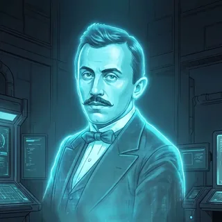

📡 Küldetés-eligazítás
📡 Pajzs kapitány & a teljes csapat: Ez az. A Végső Egyenlet nem egyetlen feltétel, hanem több feltétel egyszerre — egy egyenletrendszer, amelynek közös megoldása lezárja a Nullpont-anomáliát. Mindenki hozza a maga szálát: Krats Ynot az egyenleteket, Petar Pauk a grafikont, Nada a korlátokat. A rendszer megoldása ott van, ahol minden feltétel egyszerre teljesül. Csapat, gyülekező!
A lineáris egyenletrendszer több lineáris egyenlet együttese, közös ismeretlenekkel. A megoldás az az érték-együttes, amely minden egyenletet egyszerre kielégít. Kétismeretlenes rendszernél három egyenértékű módszerünk van.
Behelyettesítő módszer
Az egyik egyenletből kifejezzük az egyik ismeretlent, és behelyettesítjük a másik egyenletbe — így egyismeretlenes egyenletet kapunk.
✏️ Kiképzési szimuláció
Oldd meg: \(x+y=5\), \(x-y=1\).Megoldás
Az elsőből \(y=5-x\). Behelyettesítve a másodikba: \(x-(5-x)=1\), azaz \(2x-5=1\), innen \(x=3\), majd \(y=2\).
Az együtthatók kiküszöbölése
A két egyenletet úgy szorozzuk (ha kell), hogy az egyik ismeretlen együtthatói ellentettek legyenek, majd összeadjuk az egyenleteket — az egyik ismeretlen kiesik.
✏️ Kiképzési szimuláció
Oldd meg: \(2x+y=7\), \(x-y=2\).Megoldás
A két egyenletet összeadva az \(y\) kiesik: \(3x=9\), innen \(x=3\), majd \(y=1\).
Grafikus megoldás
Mindkét egyenlet egy-egy egyenest határoz meg a koordináta-rendszerben. A rendszer megoldása a két egyenes metszéspontja — az egyetlen pont, amely mindkét egyenesen (tehát mindkét egyenletben) rajta van.
Az \(y=x+1\) és \(y=-x+3\) egyenesek metszéspontja \((1,2)\) — ez a rendszer megoldása.
🎯 Gyors kérdés
Egy kétismeretlenes rendszer megoldása \((2;-1)\). Hogyan ellenőrzöd?
Háromismeretlenes rendszer — a Gauss-módszer
Három ismeretlennél a cél a lépcsős alak: az egyenletekből sorra kiküszöböljük az ismeretleneket, míg egy egyismeretlenes egyenlet marad, majd visszafelé behelyettesítünk.
✏️ Kiképzési szimuláció
Oldd meg: \(x+y+z=6\), \(x-y+z=2\), \(2x+y-z=1\).Megoldás
Az első két egyenlet különbségéből \(2y=4\), azaz \(y=2\). Ekkor \(x+z=4\) (az elsőből) és \(2x-z=-1\) (a harmadikból, \(y=2\)-vel). Ezeket összeadva \(3x=3\), innen \(x=1\), majd \(z=3\). Megoldás: \((1,2,3)\).
🎯 Gyors kérdés
Mi a Gauss-módszer célja háromismeretlenes rendszernél?
Szöveges feladatok rendszerrel
A modellezés lépései: (1) vezess be ismeretleneket (mit keresünk?); (2) a szöveg minden feltételéből írj fel egy egyenletet; (3) oldd meg a rendszert; (4) értelmezd a választ a feladat szövegében (és ellenőrizd).
✏️ Kiképzési szimuláció
Egy panzióban három- és kétágyas szobák vannak: összesen \(14\) szoba, \(34\) férőhely. Hány szoba van mindkét fajtából?Megoldás
Legyen \(h\) a háromágyas, \(k\) a kétágyas. Ekkor \(h+k=14\) és \(3h+2k=34\). Behelyettesítve \(h=6,\ k=8\): 6 háromágyas és 8 kétágyas.
🎯 Gyors kérdés
Mi a szöveges feladat megoldásának első lépése?
Hány megoldás van? — a geometriai kép
💡 Metsző, párhuzamos, egybeeső
Két egyenes háromféleképpen helyezkedhet el, és ez a rendszer megoldásainak számát is megadja: metsző egyenesek → pontosan egy megoldás; párhuzamos (nem egybeeső) egyenesek → nincs megoldás; egybeeső egyenesek → végtelen sok megoldás. Ugyanaz a három eset, mint a paraméteres egyenletnél!
✏️ Kiképzési szimuláció — amikor eltűnik az ismeretlen
A geometriai kép szép, de a füzetben nem rajzolunk minden rendszert. Honnan veszed észre számolás közben, hogy nincs megoldás, vagy hogy végtelen sok van? Onnan, hogy mindkét ismeretlen kiesik — és ilyenkor a megmaradt számegyenlőség dönt.
a) Küszöböljük ki az \(x\)-et:
\[\begin{aligned}2x+3y&=7\quad\Big/\cdot(-2)\\ 4x+6y&=1\end{aligned}\]Az elsőt \(-2\)-vel szorozva \(-4x-6y=-14\), és ezt a másodikhoz adva mindkét ismeretlen kiesik:
\[0=-13.\]Ez hamis számegyenlőség, tehát nincs olyan \((x;y)\) pár, amely mindkét egyenletet kielégítené: a rendszernek nincs megoldása. A két egyenes párhuzamos.
b) Most a második egyenlet jobb oldala legyen \(14\):
\[\begin{aligned}2x+3y&=7\quad\Big/\cdot(-2)\\ 4x+6y&=14\end{aligned}\]Ugyanígy összeadva:
\[0=0.\]Ez mindig igaz, tehát a második egyenlet nem mond semmi újat — pontosan az első kétszerese. A rendszernek végtelen sok megoldása van: minden pár, amelyre \(2x+3y=7\). A két egyenes egybeesik.
⚠️ Kán csapdája — a „0 = 0” nem azt jelenti, hogy nincs megoldás
A két fajuló eset könnyen összekeverhető, mert mindkettőnél eltűnnek az ismeretlenek. Csakhogy az eredmény ellentétes:
- \(0=13\) — hamis állítás → nincs megoldás (üres halmaz);
- \(0=0\) — igaz állítás → végtelen sok megoldás.
Ha a végén \(0=0\)-t kapsz, ne írd oda, hogy „nincs megoldás”, és ne is hagyd üresen a választ: add meg a megoldáshalmazt a megmaradt egyenlettel. Ugyanez a különbség köszön vissza az \(ax=b\) alakú egyenletnél is.
🎯 Gyors kérdés
Egy kétismeretlenes rendszer kiküszöbölése után \(0=0\)-t kapsz. Hány megoldása van a rendszernek?
🧾 Gyorsismétlő
💡 A teljes témakör egy lapon
Egyenlet: mérlegelv, zárójel/tört felszorzás, \(ax=b\) eset-vizsgálat. Egyenlőtlenség: mint az egyenlet, de negatívval szorzáskor a reláció fordul; megoldás számegyenesen/intervallummal. Függvény: \(f(x)=kx+n\) — meredekség, tengelymetszet, nullahely, két pontból ábra. Rendszer: behelyettesítés / kiküszöbölés / grafikus; 3 ismeretlen → Gauss; szövegesnél modellezz. Megoldások száma: egy / nincs / végtelen.
Gyakorolj! Válaszd a bevetésed:

📡 SZVETI: A Végső Egyenlet összeállt — a szakadás zárul. Most élesben: a kiképzési adattárban gyakorolj (ott vár a 16 valós szöveges bevetés is), majd a terepküldetésen vezesd le a saját fináléd.